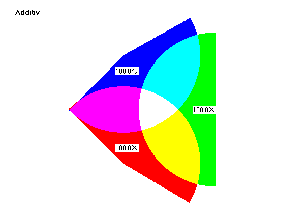
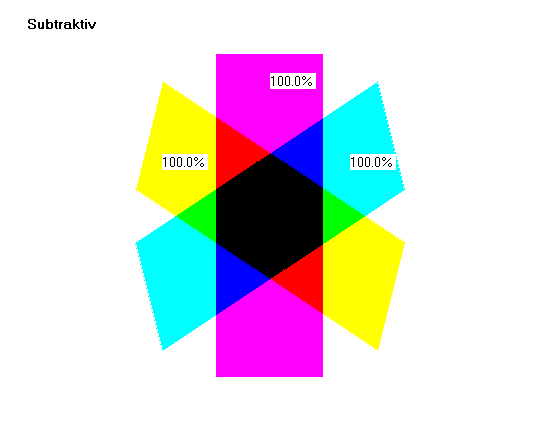

På figuren herover ses additiv farveblandinger af blå, rød og grøn. Farverne kan fremkomme ved at man lyser med hvidt lys fra 3 lamper gennem farvefiltre med farverne blå, rød og grøn.
Bemærk, at området i midten, hvor alle 3 lamper overlapper hinanden er hvidt. Øjet opfatter summen af de 3 farver som hvid, men nethinden rammes altså af alle 3 farver rød, grøn og blå.
I programmet tegnes farverne på sort baggrund, for at markere at det kun er de tre farver rød, grøn og blå, der blandes.

Ved subtraktiv farveblanding bliver området, hvor alle 3 farver overlapper sort. Forsøget kan illustreres ved at lægge nogle farvede stykker plastic oven på hinanden på en overheadprojektor eller holde dem op foran skærmen. Det midterste område bliver sort fordi det gule plastic kun tillader den gule farve at komme igennem og den gule farve går ikke igennem det blå eller det røde plastic. I programmet tegnes farverne på hvid baggrund.
Prøv at sende hvidt lys igennem et prisme, så hele farvespektret kan iagttages på en skærm. Hold så forskellige stykker farvede plastic ind i strålegangen og iagttag, hvilke farver der går igennem.